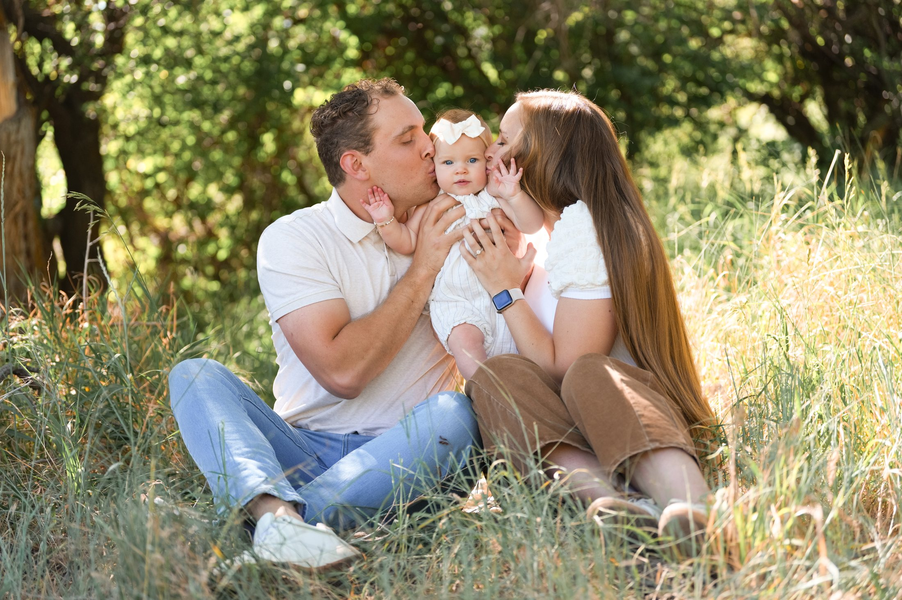
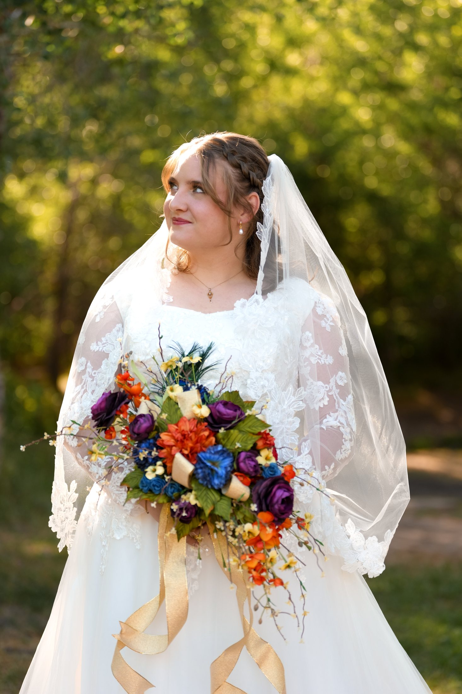
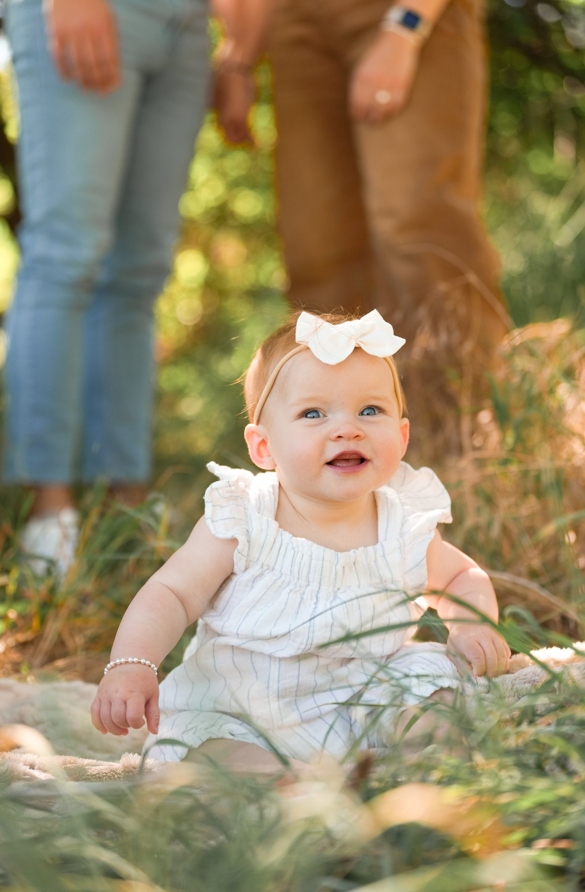
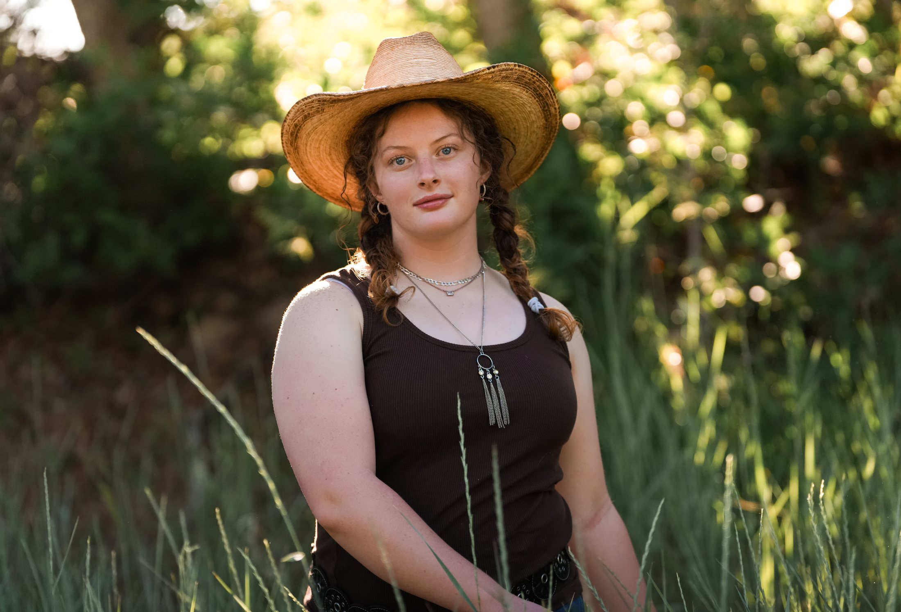
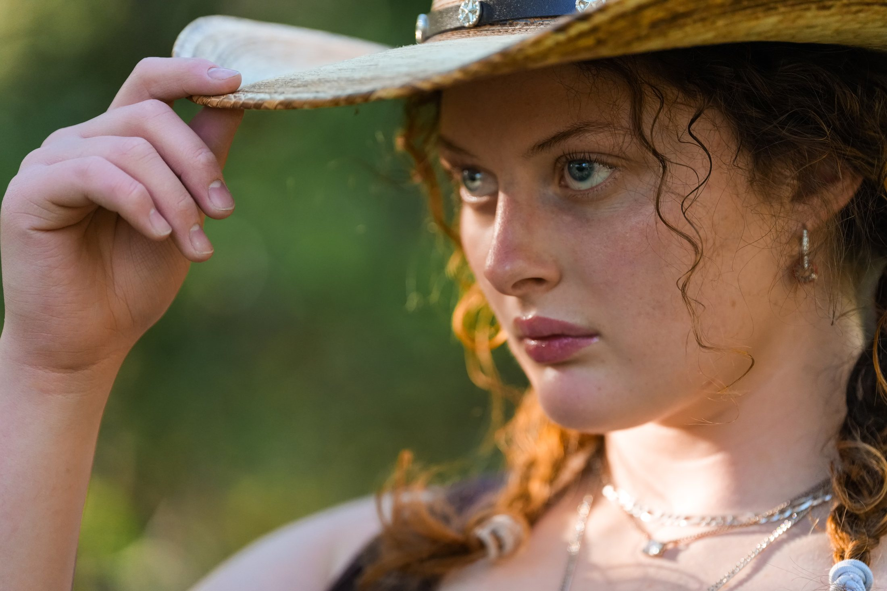
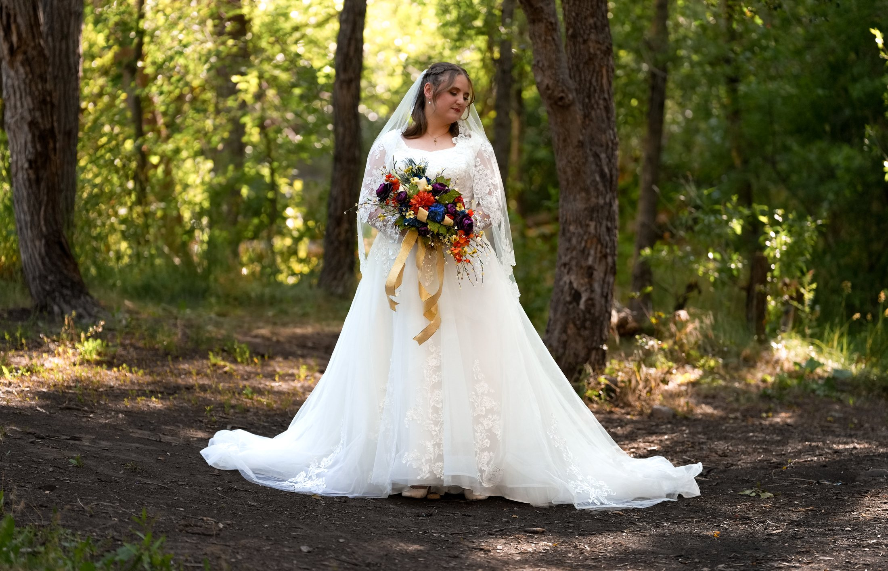

Frame 01 — The Work
A few from the archive







Utah · Lifestyle / Family / Portrait
I'm a Utah photographer capturing the moments worth keeping — lifestyle, family, and portrait sessions shot as real life actually looks.
View the workFrame 01 — The Work





Frame 02 — About Sharley
I'm a Utah-based photographer who believes the best photos aren't posed — they're noticed. My work leans into real moments: the in-between laughs, the quiet mornings, the way a family actually moves through a room. Whether it's a lifestyle session, a family shoot, or a portrait sitting, my goal is the same: to hand you back something that feels like you, not a performance of you.
Frame 03 — Let's Make Something
Based in Utah · Available for travel